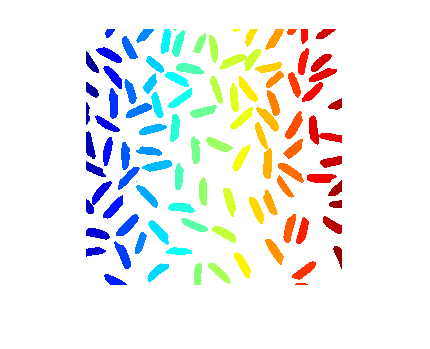
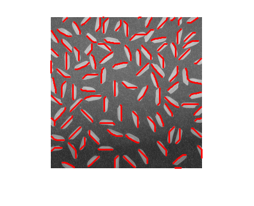

Contents
function demoImMaxGeodesicPath(varargin)
%DEMOIMGEODESICPATH Demo for function imGeodesicPath % % output = demoImGeodesicPath(input) % % Example % demoImGeodesicPath % % See also % % % ------ % Author: David Legland % e-mail: david.legland@grignon.inra.fr % Created: 2011-02-22, using Matlab 7.9.0.529 (R2009b) % Copyright 2011 INRA - Cepia Software Platform.
Initialisation de l'image a traiter
% lecture image img = imread('rice.png'); % segmentation basique img2 = img - imopen(img, ones(30, 30)); bin =img2 > 50; % etiquetage lbl = bwlabel(bin, 4); figure; imshow(label2rgb(lbl, 'jet', 'w'));
Calcule des chemins geodesiques maximaux
% affiche image imshow(img); hold on; % pour chaque particule, calcule et affiche le chemin tic; for i=1:max(lbl(:)) path = imMaxGeodesicPath(lbl == i); plot(path(:,1), path(:,2), 'color', 'r', 'linewidth', 2); end % affiche le temps ecoule t = toc; disp(sprintf('Temps ecoule : %f', t)); %#ok<DSPS>
Temps ecoule : 5.683308